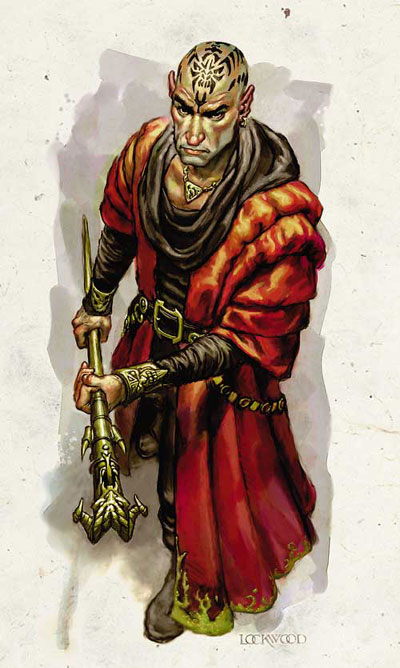
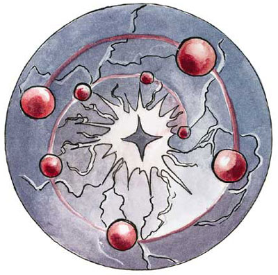
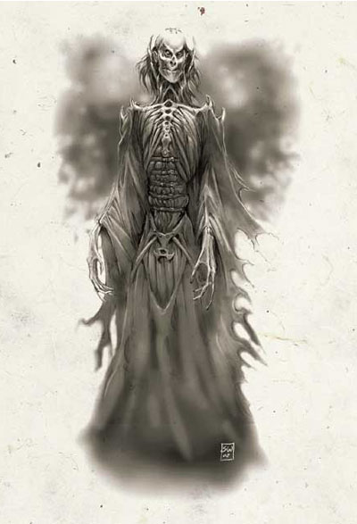

YY：补充一段背景介绍，由www.gamebase.com.tw龙与地下城系列相关讨论板的一凡翻译
红袍法师会是扥雷地区的统治者，他们也拥有征服正个费伦大陆的野心。他们特别集中心力钻研某一个魔法学派，使他们成为某个学派的大师。整个费伦大陆的人都视他们为既邪恶又残忍的暴君。有些当地住民会离开这个国家，以避免专心研究魔法之时尚需受到政治阴谋以及奴隶起义的威胁。
红袍法师会的准成员必须选择一个专精的魔法学派，然后尚须得到魔法纹身专长，如此方可成为正式会员。所有的红袍法师都拥有专修学派法师的技巧，他们也将大部份的心力投注在研究他们专修的学派，不过有时也会涉猎其他的法术（比如预言或是战斗用的法术）。红袍法师会由一个8人组成的议会领导，由各个学派推出一人代表。虽然理论上来说术士与吟游诗人也可以加入红袍法师会，不过由于此两者在当地不受欢迎，因而此种状况十分罕见。
红袍法师会标志

现任会长 Szass Tam （死灵系议员）
（男性人类巫妖 死灵师10级/红袍法师10级/大法师2级/传奇等级7级）

红袍法师是FR背景提供的一种进阶职业，所有的红袍法师都必须是红袍法师会的成员。要成为红袍法师，角色必须满足以下条件：
阵营：任何非善良阵营
种族：来自Thay的人类（Thay是费伦大陆的地名，红袍法师会就是那里的统治者，看来他们并不相信任何外来者）
施法能力：施放3级奥术的能力
技能要求：法术辩识 8 ranks+
专长要求：特殊纹身Tattoo Focus和总数超过3个的超魔专长或物品制造专长
（madcatclan译注：特殊纹身Tattoo Focus这个专长并不是通过学习掌握的，而是指在加入红袍法师会的仪式上由高阶红袍法师放置在新会员身上的魔法纹身。这个纹身有多种用途：确保加入者是真心自愿加入红袍法师会的；确保加入者是符合资格的；永久性表明加入者的身份；赋予学习、掌握和参与环之法术的能力；让其他红袍法师能感应到其确切的位置。）
（madcatclan译注：诗人和巫师也能成为红袍法师，尽管这种情况发生得极为罕见。）
生命骰：d4。
职业技能：炼金术、专注、手艺、黑话Innuendo、胁迫、知识（所有种类）、专业、占卜、法术辩识。
每一级红袍法师能得到 2+INT MOD个技能点。
职业能力：
装甲熟练(Weapon and Armor Proficiency）：
红袍法师不会令角色获得任何额外的武器和盔甲熟练。
施法次数（Spells per Day）：
红袍法师的训练集中在奥术上，因此当角色的红袍法师职业等级提升时，角色会获得新的施法次数，就如同他的奥术施法者等级被提升了一样。角色可以把红袍法师等级加到原本的奥术施法职业的施法等级中以提高有效的施法者等级，从而提升每天的法术量和施法等级。但角色原本职业的其他特性并不会因此而得到提升，例如专长、豁免、技能等等。
如果角色在成为本进阶职业前有多个奥术施法职业等级的话，角色每次提升红袍法师职业等级时必须要决定把获得的施法等级加到哪一个职业上。
专精强化（Enhanced Specialization）：
红袍法师将进一步强化他所专精的学派。为了得到这个奖励，红袍法师将牺牲学习其他一些学派的奥术能力。红袍法师必须如同1级专精法师一样选择他的对立学派。他将不能学习对立学派的任何法术，但他依旧能继续使用成为红袍法师前就已经掌握了的对立学派的奥术。这个对立学派不能是1级专精法师已经选择过了的对立学派。
举例来说，一个变化系的专精法师，他选择了防护系和附魔系为对立学派。当他成为红袍法师时，他必须继续以变化系为条件再一次选择对立学派，而且不能再选择防护系和附魔系（因为已经被选择过了）。因此他决定选择咒法系为对立学派。
专精强化的奖励与专精法师相同，这两个奖励将叠加计算。
（madcatclan译注：Ediwn的项链……）
专精学派防御（Specialist Defense）：
在红袍法师对抗他所专精的学派的奥术时，将这个值附加到全部的豁免检定上。
法力强效（Spell Power）：
在红袍法师施放他所专精的学派的奥术时，将这个值附加在豁免检定的DC和击破目标法术抗力的检定上。这个附加值在红袍法师等级1时为+1，在红袍法师等级4时为+2，在红袍法师等级6时为+3，在红袍法师等级8时为+4，在红袍法师等级10时为+5。这个值将与其他奖励叠加。
额外专长（Bonus Feat）：
红袍法师能用这个额外专长选择一个物品制造专长，超魔专长或是法术掌握专长。
环之导师Circle Leader
在红袍法师成为环之导师后，他将拥有领导施放环之法术的能力。具体说明见第二章：环之法术。
（madcatclan 译注：环之法术是一种非常强大和华丽的法术仪式，这种仪式必须由多名红袍法师同时施展，最为标准的施放方式就是一名环之导师带领最少两名助手来完成：导师站在园环的中心，他的助手们围着他站成一圈，每个人都和站在园心的环之导师保持10英尺的距离。普通的环之导师最多能带领五名助手来进行一个法术的施放，而高级环之导师刚能带领九名助手——每个助手都必须拥有特殊纹身Tattoo Focus。环之法术能让环之导师能以全部参与者的能力进行施法。在进行仪式、开始施放法术前必须先化费整整一个小时让所有的助手和环之导师的能够进入仪式必须的集中状态，然后每一个参与者都将施放整个法术的一个部分，这个动作将化费他们准备好的任意一个对应法术，最后由环之导师完成最后的法术部分。一个环之法术仪式能产生以下的效果：提升环之导师的奥术施法者等级，上限是将环之导师视为40级奥术施放者；把任何一个普通准备的法术在环之法术中随意加上超魔专长进行强化施放，用于强化的超魔专长必须是参与环之法术的红袍法师中至少有一人掌握的超魔专长，而且强化后的施法位不能高于环之导师的奥术施法者等级，上限20级；提升环之导师的法术等级检定加值，上限是+40，这个加值将用于法术的任何等级检定中，例如驱散对抗、穿透法术抗力等等。环之法术仪式产生的效力将维持24小时或维持到法术被使用掉。举例来说，一个环之导师领导着4名红袍法师建立了环，环之导师奥术等级为Lv10 （Lv5Wiz/Lv5RW），他准备施放一个极效的寒冰锥法术（madcatclan评价：化了一个小时准备，就是为了放一个极效的寒冰锥，不知道是他的敌人耐心太好呢，还是这个导师根本就是书呆子）。极效的寒冰锥将使用一个八级奥术位，四个红袍法师每人在这个法术中化费了一个记忆好的任意一个二级奥术，而环之导师则化费了一个记忆好的普通五级奥术寒冰锥。这个导师化费了助手提供的八个法术位中的三个用来完成极效的寒冰锥（他自已的五级加上三级就满足了极效寒冰锥要求的八级奥术位），另外三个用来将他施放法术的有效等级从10级提升到13级（伤害因此由10d6上升到13d6），最后二个用来强化他所需要进行的任何法术等级检定，比如击破法术抗力或是驱散对抗等等均获得+2奖励。除了极效法术被立刻施放掉了外，其他两个效果都将持续24小时（也就是说在24小时内，这个导师所施放的法术都将被视做是13级法师的威力，而且在法术等级检定上还有额外的+2优势）。许多高级的环之导师都喜欢用他们学徒的法术来强化他们自已。（madcatclan评价：废话，那么好的条件，我也喜欢））
制作纹身Scribe Tattoo
掌握制作纹身能力的红袍法师能在自愿加入并够资格成为红袍法师会的新成员身上放置这个魔法纹身，赋于他们特殊纹身attoo Focus这个专长，从而使他们能正式成为红袍法师的一员。
高级环之导师Great Circle Leader
在红袍法师成为高级环之导师后，他们可以拥有九名助理，而不是环之导师的五名。
附：
职业等级 基本命中加值 坚韧/反射/意志 特殊奖励 施法次数
1st +0 +0/+0/+2 专精强化 现有奥术施法等级+1
专精学派防御+1
2nd +1 +0/+0/+3 法力强效+1 现有奥术施法等级+1
3rd +1 +1/+1/+3 专精学派防御+2 现有奥术施法等级+1
4th +2 +1/+1/+4 法力强效+2 现有奥术施法等级+1
5th +2 +1/+1/+4 额外专长、环之导师 现有奥术施法等级+1
6th +3 +2/+2/+5 法力强效+3 现有奥术施法等级+1
7th +3 +2/+2/+5 专精学派防御+3 现有奥术施法等级+1
制作纹身
8th +4 +2/+2/+6 法力强效+4 现有奥术施法等级+1
9th +4 +3/+3/+6 专精学派防御+4 现有奥术施法等级+1
10th +5 +3/+3/+7 高级环之导师 现有奥术施法等级+1
法力强效+5
PS：
最后，密斯拉的选民，人称风暴女王的欣布一口气杀死了全部的高级红袍，弄得再也没有人能制作纹身，好好的红袍法师会只好散伙……
（以下见玄音MM的译文）
“这次你休想再逃出我们的手心！死吧！”随着沙里森·德兰（Shalithan Dlann）的高喊，他身后的十二个同党同时隐没了身形；一打的红衣巫师漂浮在大殿上方，布成致命的一列。他们脸上洋溢出得胜的表情，手头挥织出一打各不相同的杀戮咒法。
那只栖落在雕像上的乌鸦扭曲着逐渐变大，一直将自己的身形转化成了——一位秀发纷然的女子，身披着一件破旧的黑袍。她优雅端庄地坐在红衣巫师凯旋巨像（the Red Wizard Triumphant）的巨大石质头颅上，唇边浮动着一丝诡异而平静的微笑，却丝毫也没有抬起手来保护自己。
转息之间，整片空气都被爆发出的魔法能量所产生的暴力撕扯开来，沸腾翻滚着。那座巨像消失在一片四散纷飞的碎块和灰烬之中，大地剧烈地撼动，一缕朦胧的云雾慢慢地漩动在半空之中，接着浮现出一对如同匕锋般锐利的黑色眼眸，然后重新凝聚成了欣布的身姿，她端坐在一片虚空里，如同那颗石质头颅依然还在她身下一般。
她俯瞰着那几缕崩散下去的尘烟，它们在片刻之前还是那一十三名活生生的红衣巫师，她叹了口气，“你们当中就没有一个会学乖的么？”
在她身后，岩石翻滚坍塌着，平台的其他部分也正在崩溃下去。她转过身，看到了一对小一些的，穿着袍子的石像——有点象法师学徒，也许吧——也在同时崩散着，她冲着它们的灰烬说道，“好了，现在已经没有......还活着的红衣巫师了，我想没有了。”